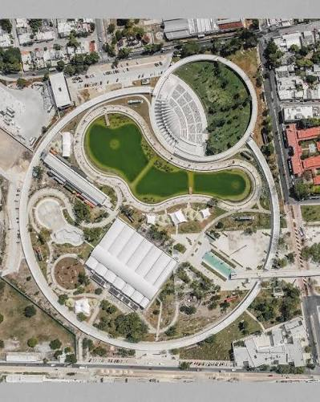

En Mérida, los parques son el corazón de la vida cultural y social de la ciudad. Son lugares vibrantes donde la gente se reúne para divertirse, socializar y disfrutar de actividades culturales. La palabra “parque” también puede referirse a los espacios que rodean una iglesia o mercado en las distintas colonias: un lugarcito para disfrutar del paisaje y dejar que los niños jueguen en los columpios o resbaladillas. Ya sea que busques un área de juegos, un área verde, instalaciones deportivas o simplemente un lugar para desconectarte de lo cotidiano, Mérida lo tiene todo. Con tantos parques para elegir, hay algunos que realmente se destacan.
Aunque Mérida tiene muchos parques fantásticos, algunos son excepcionales. Aquí te dejo una lista de los que más disfrutan mis hijas. Cada uno de estos lugares tiene mucho espacio para correr y suficiente entretenimiento al aire libre para que el viaje valga la pena. ¡Que no te sorprenda si visitas un parque después del almuerzo y no ves a nadie allí! Los locales tienden a ir después de las 5 pm para evitar el calor del mediodía. Además, ten en cuenta que durante la temporada de lluvias, los mosquitos se hacen presentes por la tarde, así que no olvides llevar repelente.
Aunque Mérida tiene muchos parques fantásticos, algunos son excepcionales. Aquí te dejo una lista de los que más disfrutan mis hijas. Cada uno de estos lugares tiene mucho espacio para correr y suficiente entretenimiento al aire libre para que el viaje valga la pena. ¡Que no te sorprenda si visitas un parque después del almuerzo y no ves a nadie allí! Los locales tienden a ir después de las 5 pm para evitar el calor del mediodía. Además, ten en cuenta que durante la temporada de lluvias, los mosquitos se hacen presentes por la tarde, así que no olvides llevar repelente.